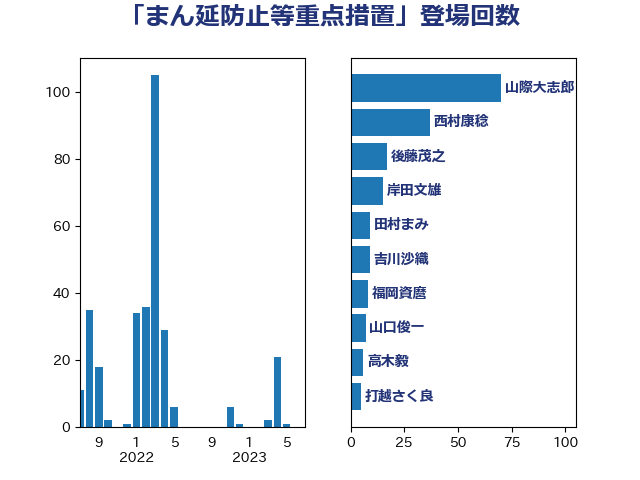

単語「まん延防止等重点措置」

| 山際大志郎 | 自由民主党 | 70 回 |
| 西村康稔 | 自由民主党 | 37 回 |
| 後藤茂之 | 自由民主党 | 17 回 |
| 岸田文雄 | 自由民主党 | 15 回 |
| 田村まみ | 国民民主党 | 9 回 |
| 吉川沙織 | 立憲民主党 | 9 回 |
| 福岡資麿 | 自由民主党 | 8 回 |
| 山口俊一 | 自由民主党 | 7 回 |
| 高木毅 | 自由民主党 | 6 回 |
| 打越さく良 | 立憲民主党 | 5 回 |
| 田村智子 | 日本共産党 | 4 回 |
| 杉尾秀哉 | 立憲民主党 | 4 回 |
| 斉藤鉄夫 | 公明党 | 4 回 |
| 塩田博昭 | 公明党 | 4 回 |
| 古賀篤 | 自由民主党 | 4 回 |
| 清水真人 | 自由民主党 | 3 回 |
| 山下雄平 | 自由民主党 | 3 回 |
| 宮口治子 | 立憲民主党 | 3 回 |
| 長浜博行 | 無所属 | 2 回 |
| 鈴木英敬 | 自由民主党 | 2 回 |
| 菅義偉 | 自由民主党 | 2 回 |
| 石垣のりこ | 立憲民主党 | 2 回 |
| 牧山ひろえ | 立憲民主党 | 2 回 |
| 片山大介 | 日本維新の会 | 2 回 |
| 滝波宏文 | 自由民主党 | 2 回 |
| 比嘉奈津美 | 自由民主党 | 2 回 |
| 平木大作 | 公明党 | 2 回 |
| 宮本周司 | 自由民主党 | 2 回 |
| 佐藤啓 | 自由民主党 | 2 回 |
| 井上哲士 | 日本共産党 | 2 回 |
| 野田聖子 | 自由民主党 | 1 回 |
| 里見隆治 | 公明党 | 1 回 |
| 萩生田光一 | 自由民主党 | 1 回 |
| 石田昌宏 | 自由民主党 | 1 回 |
| 石橋通宏 | 立憲民主党 | 1 回 |
| 石井苗子 | 日本維新の会 | 1 回 |
| 石井浩郎 | 自由民主党 | 1 回 |
| 田島麻衣子 | 立憲民主党 | 1 回 |
| 浜田聡 | NHK党 | 1 回 |
| 浅田均 | 日本維新の会 | 1 回 |
| 河野義博 | 公明党 | 1 回 |
| 江島潔 | 自由民主党 | 1 回 |
| 水岡俊一 | 立憲民主党 | 1 回 |
| 横沢高徳 | 立憲民主党 | 1 回 |
| 森屋隆 | 立憲民主党 | 1 回 |
| 柳ヶ瀬裕文 | 日本維新の会 | 1 回 |
| 松野明美 | 日本維新の会 | 1 回 |
| 川田龍平 | 立憲民主党 | 1 回 |
| 岩渕友 | 日本共産党 | 1 回 |
| 山本博司 | 公明党 | 1 回 |
| 宗清皇一 | 自由民主党 | 1 回 |
| 安江伸夫 | 公明党 | 1 回 |
| 堀井巌 | 自由民主党 | 1 回 |
| 友納理緒 | 自由民主党 | 1 回 |
| 倉林明子 | 日本共産党 | 1 回 |
| 伊藤岳 | 日本共産党 | 1 回 |
| 世耕弘成 | 自由民主党 | 1 回 |
| こやり隆史 | 自由民主党 | 1 回 |